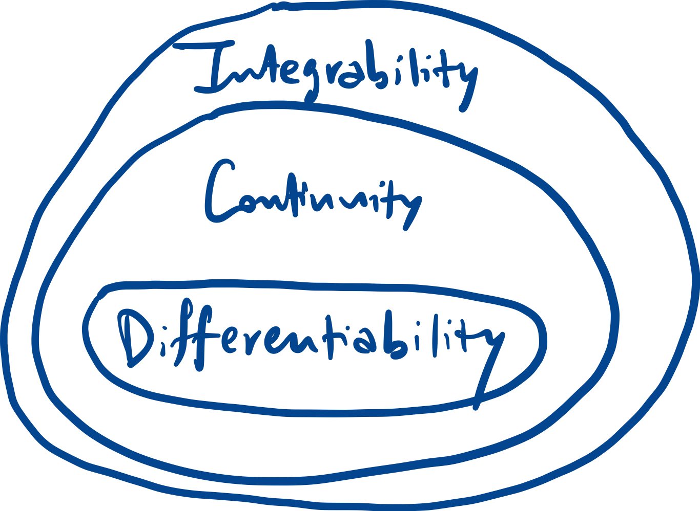
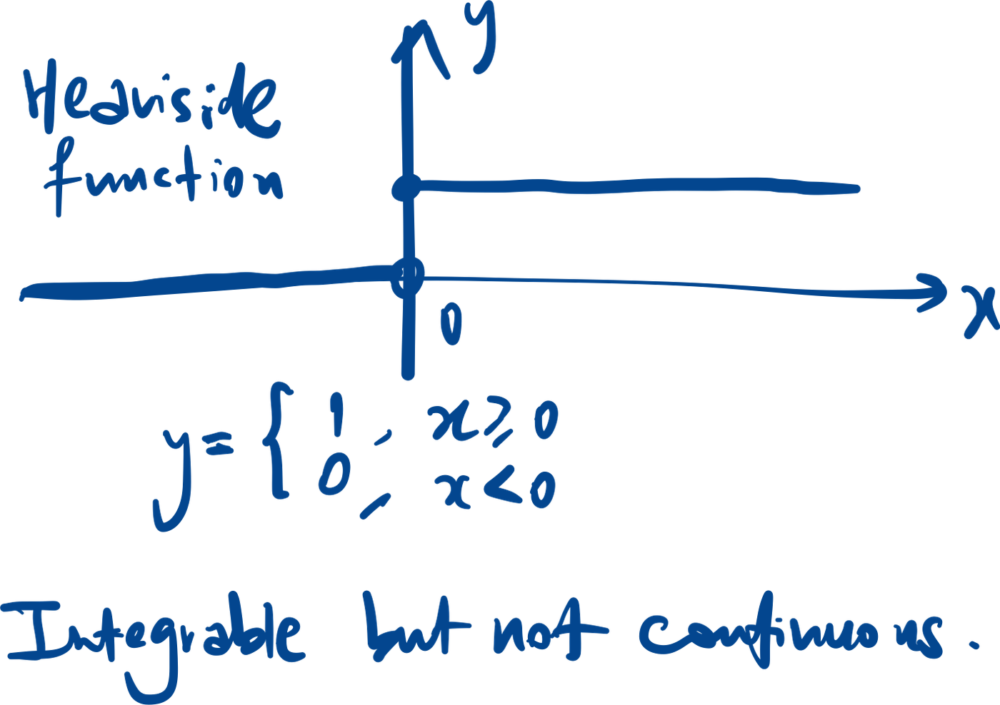
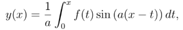
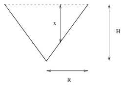
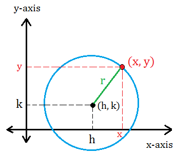
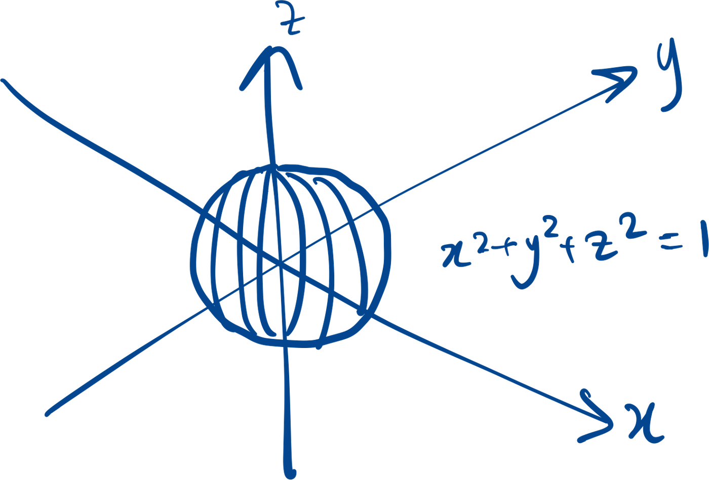
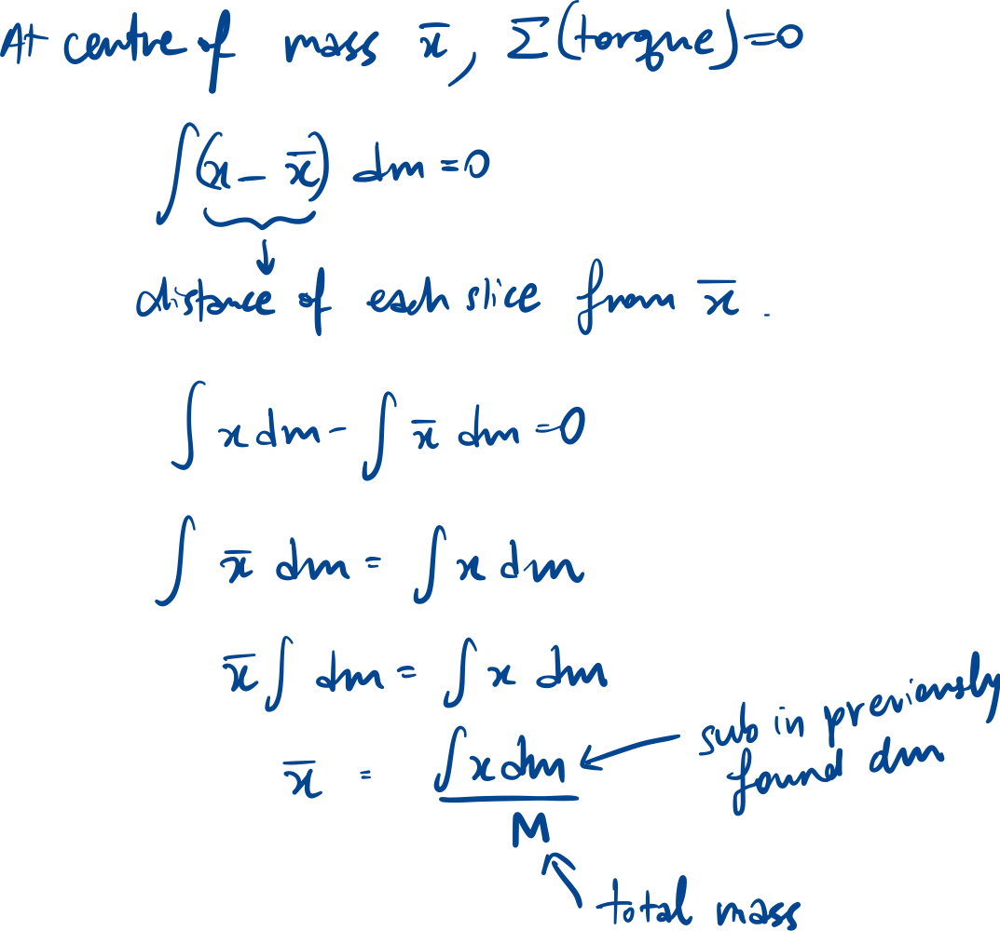
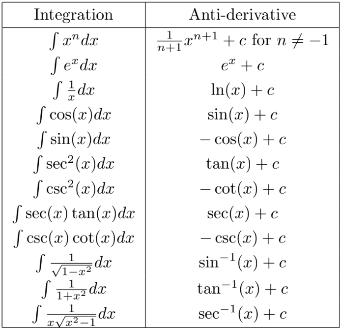

Riemann sum
Properties
Continuity implies
integrability
Reason: Continuous function has unbroken graph, which means we can
find the area under it.
Integrable functions need not be continuous.
Reason: The area under the graph can continue accumulating even
across discontinuous points.
**For non-continuous f, the integral F is continuous. F is
differentiability only if f is continuous (area has no sharp turning
points).

Heaviside function:

Integrability and
boundedness
This means an unbounded function is non-Reimann integrable; and a
function with infinitely many discontinuous points is
non-integrable.
Splitting at point c
Comparing area under graphs
Triangle inequality
Recap:
Average value of a function
Integral Mean Value Theorem
Fundamental theorem of
calculus
** if f continuous, F is differentiable. (There are no sharp jumps in
the area under the graph).
** if x is inside the integral, pull x out then use product rule.

Improper integrals
LHS is an improper integral. If the RHS limit exists, the improper
integral converges.
Indefinite integrals
Applications
dx represents a small quantity/change of some x, integrating across
all dx represents summing all these dx’s up.
Work done
Summing up all force, F, applied at each small distance, x.
Force
Summing up all pressure, p, applied at each small area A.
Mass
*Identify slices of A(x) that share the same density.
A(x) could be πr^2 / 2πr.
Special shapes
Cone

For liquid pressure on side of container, may need to consider ds
first, where ds is the slant height.
Usually involves using similar triangles / Pythagoras’ Thm to find
relationship between r & h, ds & dx, etc.
**
Circle
(x - h)2 + (y - k)2 = r2
(h, k) is the centre of the circle, r is the radius.

Sphere
x2 + y2 + z2 = r2
z represents vertical plane, r represents radius of sphere
Each slice would be a circle.

Centre of mass

Methods of integration
Basic results

Integration by parts
[derived from product rule].
**choose g that can be integrated, and f that can be
differentiated.
[some integration may loop
e.g. ]
Change of variables
- Inverse trigo substitution
e.g.
Use formulas: $\sin^2 x + \cos^2 x = 1, \quad \tan^2 x + 1 = \sec^2 x$
- Trigo polynomials
e.g.
Use double angle formulas:
- If both m,n even, just sub directly.
- If either m,n are odd, sub u=cos x or sin x, to get a polynomial in
u.
- Half-angle substitution
Example: $\int \frac{\sin^{3}x + \cos x}{\sin x - \cos x}\,dx$ (lowkey impossible nvm)
- Partial fractions
Where each quadratic root has no real root.
Fundamental theorem of
algebra
If coefficients of the polynomial are real,
Rational root theorem
**Integral root theorem – If the leading coefficient = 1, all of its
integer roots divide the constant term.